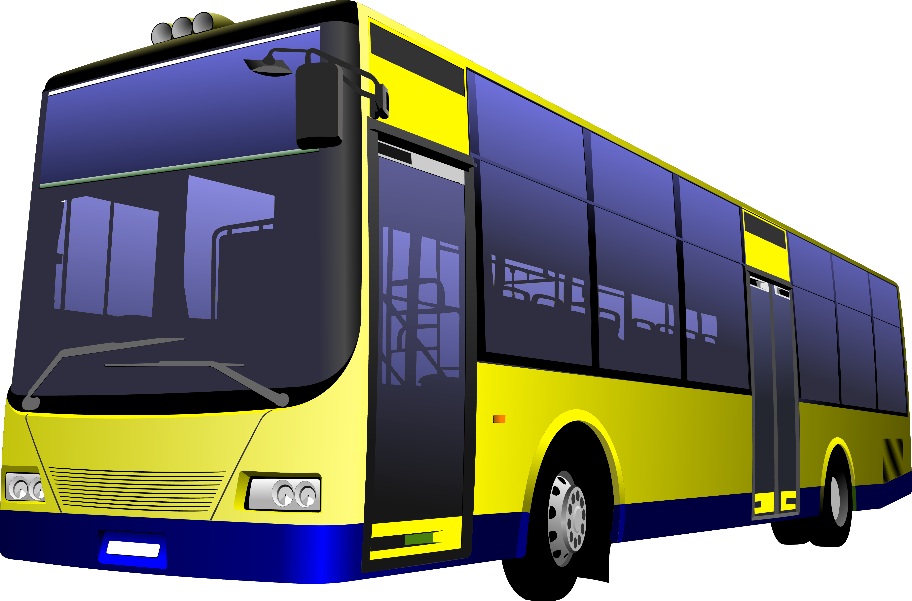

| Как получить возмещение за травму в общественном траспорте? |
| Кратко о страховании в общественном транпорте. |
| Наш специалист расскажет,что делать при получении травмы во время поездки в общественном транспорте. |
| А так же будет приведён перечень документов, требуемых для получения страховой выплаты. |
| На что же всё таки может рассчитывать пассажир? |
|
